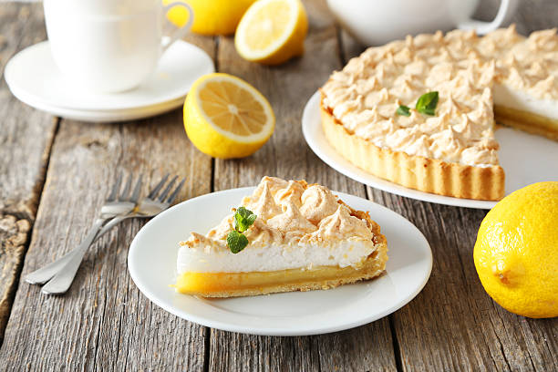

Lemon Pie
Simplest dessert on earth

This Delicious Lemon Pie is so good and so easy to make
that is going to melt your tasting buds away and everyone can do it
You dont need to be a master baker or your grandma to make this great dessert,
in this recipe i'm gonna show you how simple can it get to make a lemon pie
Ingredients:
- 200ml Of Lemon Juice
- 200g Of Maria cookies
- 100g Butter
- 6 eggs
- 2 Cans of sweetened condensed milk
- 250g Of Suggar
Preparation:
Part 1: The Base:
- First for the base Crunch all the Maria cookies in a food processor or blender until reduced to the size a sugar grain
- Melt the butter and add it with 50g of suggar to your cookie dust to mix it all together
- Once is made a mass, spread it in your pie base like you are making a bowl made of cookie
- Put in the over at 175 Celcius for 10min and then refrigerate for 15min
Part 2: The Cream
- Crack open all your eggs while separating all the egg yolks from your egg whities
- In a Bowl, add the 2 cans of sweet condensed milk, the 6 yolks and you lemon juice and mix it all together
- This is optional but you can add Yellow food colorant if you like your Lemon Pie very Yellow
- Once the mix is very creamy, pour your Lemon cream into the refrigerated base and put them together in the oven for 15min at 175 Celcius
Part 3: The Icing
- Very simple icing, just add all the leftover eggs whites and 200g of suggar into a metal bowl
- Set it over boiling water very quickly until the sugar grains dissolve while whisking
- Then apply a mixer to your eggs to so your eggs rises in to white beautiful sweet glory
- By this point your Pie should be Out of the oven, wait until its cold if you must and decorate top with icing
- Another Optional is that you can add some lemon peel grating on top of the icing, makes it look awesomenly good